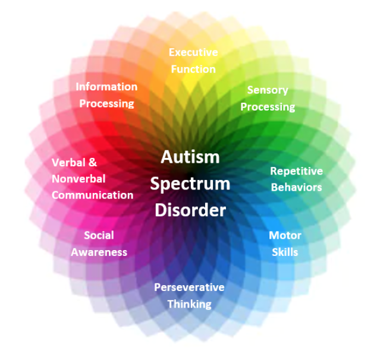

Welcome to AZ Autism Resources!
A dedicated site for parents with kids on the spectrum
Autism spectrum disorder is a condition concerning the brain development that is impacted by how a person perceives and socializes with others. There is a possibility with autism to cause problems or limitations in social interaction and communication. Autism Spectrum Disorder (ASD) is defined as a neurodevelopmental disability causing difficulty with social communication and interaction with other people, as well as, restricted interests and repetitive behaviors (American Psychiatric Association, 2013).
The graphic below represents a number of areas that can be affected by ASD. 
There is also complexity in the potential symptoms listed for ASD versus the various ways the symptoms can present. The list of symptoms in the diagnostic criteria is not an exhaustive list and the clinician needs to be familiar with symptomology beyond just what is listed. They also need to be familiar with developmentally expected behavior so that they can compare what is observed and reported to typical development.
For example, if parents report that the child is reactive to loud noises, that doesn't necessarily mean they have sensory sensitivity. It could be a developmentally appropriate reaction to hearing a loud noise, but it is likely a sensory sensitivity if the individual is 15 years old and has a tantrum for 20 minutes every time they hear a loud noise. I appreciate the aspect of autism as a spectrum disorder that allows for more individuality in the diagnosis. It has broadened the perspective of what ASD is and how it is perceived.
Now if someone has ASD, it is not assumed they are nonverbal with a co-occurring Intellectual Developmental Disability. ASD now can allow people to be seen for their unique qualities. I feel that it also encourages more focus on the strengths of the individual and not just areas of concern.
By seeing the whole person and their strengths and weaknesses across all areas, it helps to provide better treatment for each person.
References:
- American Psychiatric Association
- Diagnostic and statistical manual of mental disorders (5th ed.). Arlington, VA
- https://carmenbpingree.com/blog/what-is-autism-spectrum-disorder/